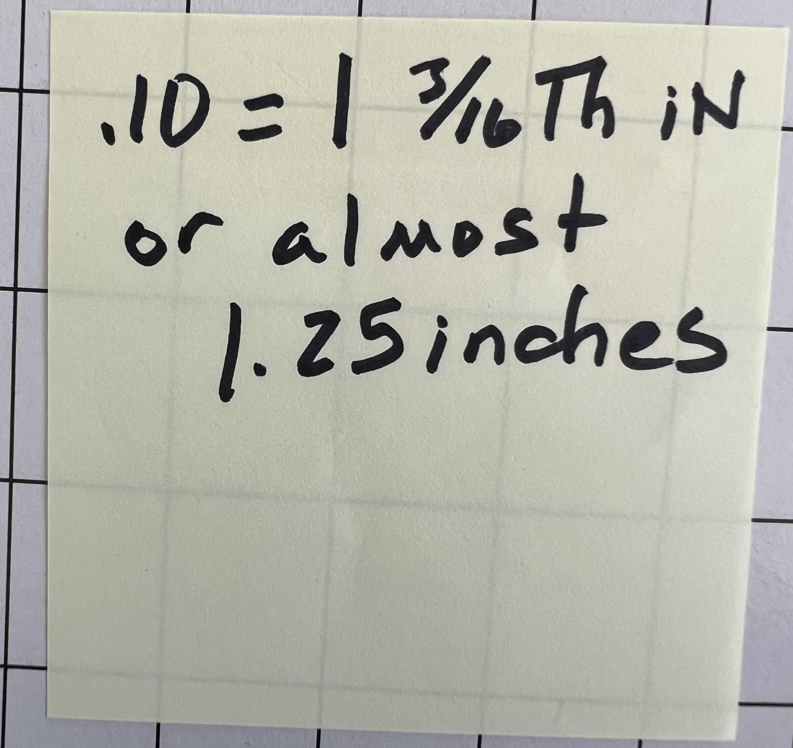
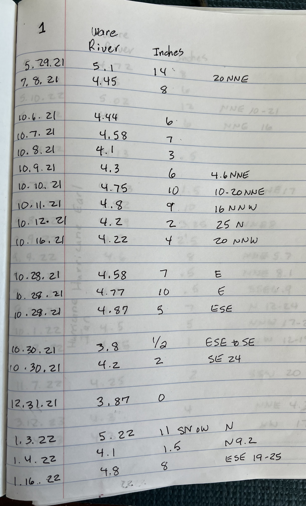
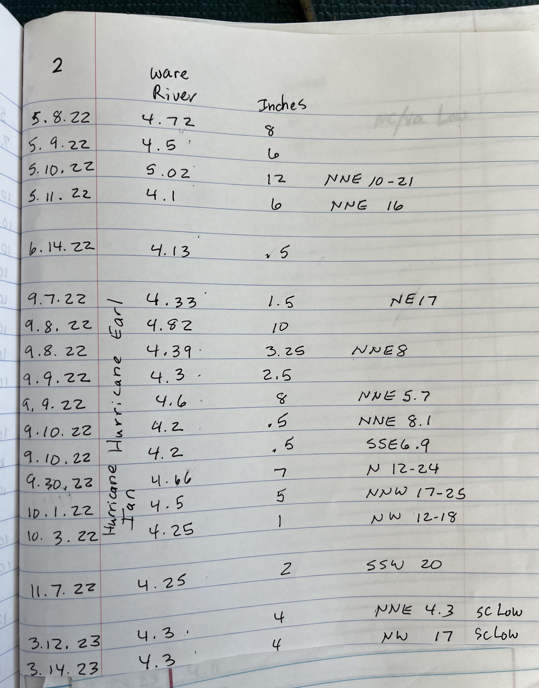
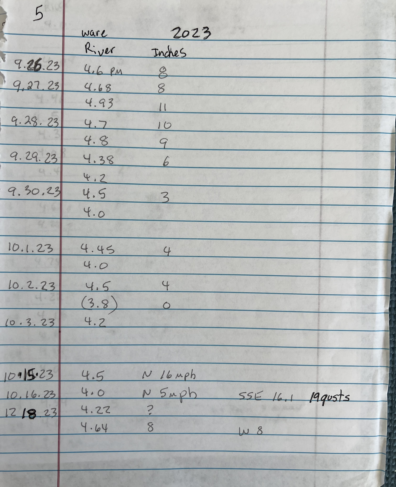

From Handwritten Notebooks to a Predictive Flood Model
How 204 storm observations recorded with measuring tapes across 5 years in Mathews County, Virginia uncovered the mathematical tipping points of coastal compound flooding.
Why Regional Weather Reports Fail Mathews County
Mathews County is an almost sea-level peninsula surrounded by the Chesapeake Bay, Mobjack Bay, and the Piankatank River. Much of the land sits less than 5 to 10 feet above sea level.
When TV forecasts in Richmond or Norfolk announce a "Coastal Flood Warning," it offers almost zero practical value to a local homeowner. It doesn’t tell you whether the water will stay in the ditch or flood the driveway, what time high tide will block your car, or whether an SUV can get through.
The Ground-Truth Observations (2021–2026)
Between May 2021 and September 2026, our family logged 204 individual storm events by hand, measuring water depths in inches and noting Ware River gauge stages and wind directions.

The Discovery Note: ".10 = 1 3/16th IN"
On this sticky note, mom recorded her empirical conversion: 0.10 ft of river rise equals almost 1.25 inches of ground flood. Three years later, our rigorous linear regression proved her exact ratio: 10.95 inches per foot (1.10" per 0.10')!

Notebook Page 1: May 2021 to Jan 2022
Tracking early nor'easters, winter storms, and the May 2021 high water event (5.10 ft stage yielding 14.0" flood depth). Clear records of wind directions and speeds.

Page 2: Hurricane Earl & Hurricane Ian
Documenting Hurricane Earl (Sep 2022, 10" depth) and Hurricane Ian (Oct 2022, 7" depth). Demonstrates how wind direction dictated flood depth even when river stages were identical.

Direct Physical Verification
Every point in our training dataset was physically verified with yardsticks and tape measures at key reference spots on the driveway and yard.
The Three Physical Breakthroughs
1. The Tipping Point
Below 3.99 ft MLLW, water remains in ditches (0" flooding). Above 4.00 ft, ditch banks breach and water spreads across the driveway.
2. The Inundation Slope
Every 0.10 ft of river rise yields 1.1 to 1.2 inches of water depth on the property ($r = 0.912$, $R^2 = 0.832$).
3. Compound Pluvial Physics
Heavy rainfall cannot drain by gravity when high bay water acts as a "cork in the ditch," trapping rain directly onto driveways.
Serverless Cloud Execution
This entire portal runs at zero financial cost using GitHub Actions. Every 30 minutes:
- A cloud runner spins up and queries NOAA NWPS (Ware River WRVV2 6-min stage & 4-day forecast hydrograph).
- Fetches real-time winds and storm surge from Yorktown USCG and Windmill Point.
- Computes the Hybrid Hydrodynamic–ML stage forecast and micro-topography water depths.
- Appends verified hours to our permanent
archive_hourly_observations.csv. - Rebuilds and publishes this website on GitHub Pages.